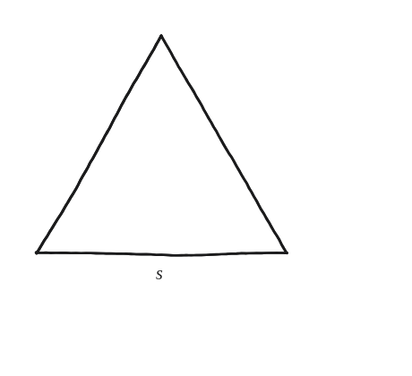
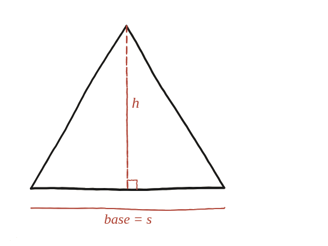

Quina és l'àrea d'un triangle equilàter?

Una peça, ja feta
L'altura d'un triangle equilàter de costat s ja s'ha trobat a la Qüestió 26: h = (√3/2)s. La fórmula de l'àrea d'un triangle qualsevol —àrea = (1/2)·base·altura— val exactament igual aquí, sigui quin sigui el triangle que se substitueixi.
Substituir i simplificar
Amb base s i altura (√3/2)s: àrea = (1/2)·s·(s√3/2) = (√3/4)s². No hi ha cap pas de raonament nou aquí: és substituir un resultat ja demostrat dins d'una fórmula ja coneguda.

Un detall que val la pena notar
Encara que sembli un pas trivial, val la pena notar què s'hi fa: reutilitzar un resultat obtingut fa dues preguntes —no un teorema ja conegut d'abans— com a peça d'una demostració nova. És exactament així com s'acostuma a construir la geometria a partir d'aquí: un resultat obtingut serveix d'entrada per al següent.
Àrea = (√3/4)s². Surt de substituir directament l'altura ja trobada a la Qüestió 26 (h=(√3/2)s) dins la fórmula habitual de l'àrea d'un triangle, sense necessitat de cap argument addicional.
Comprovació
Amb s=10: (√3/4)×100≈43,30. Comprovant-ho també multiplicant directament (1/2)×10×8,66≈43,30 —coincideixen.